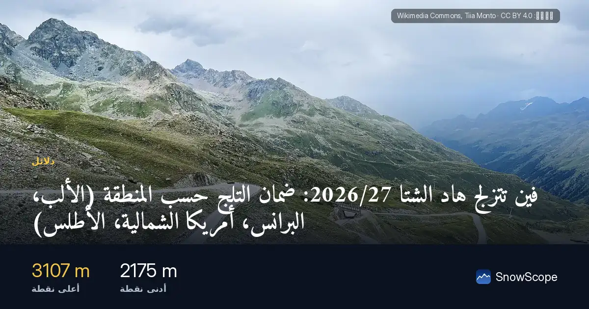
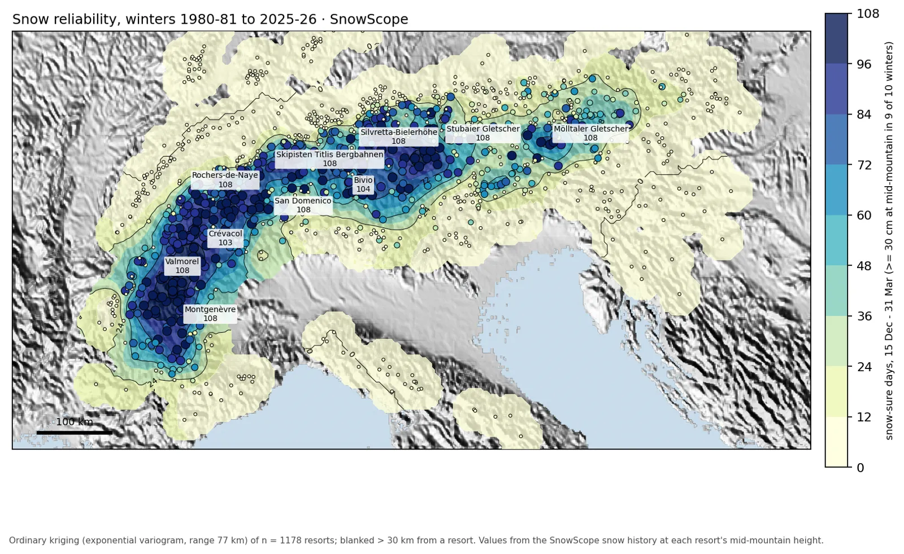

فين تتزلج هاد الشتا 2026/27: ضمان التلج حسب المنطقة (الألب، البرانس، أمريكا الشمالية، الأطلس)
شي محطات كتحافظ على التلج تقريبا كل شتا؛ واخرين معتمدين على الحظ. درسنا علو ديال التلج في وسط الجبل على مدى 46 شتوات (1980-81 لـ 2025-26) وحسبنا شحال من النهار من 15 ديسمبر لـ 31 مارس كان فيهم 30 سم الأقل في 9 شتوات من 10. هاد الشي كيقول ليك فين تحجز بثقة.
شوف توقعات التلج مباشرة ديال Kaunertaler Gletscher فالتطبيق ديال SnowScopeالعلو ديال التلج، التنبيهات والخريطة 3D، فابور.
شنو اللي يحسب التلج الموثوق
موسم التزحلق الأساسي فيه 108 نهار. محطة واحدة كتاخذ حالة 'التلج الموثوق' إذا كان عندها 30 سم الأقل في وسط الجبل في هاد النهار كثير في 9 من 10 شتوات اللي فاتو. ونحن كنتبعو هاد 'النهار الطبيعي': 30 سم الأقل في نص الشتوات. هاد الأرقام جاية من سجل التلج ديالنا—سجل لعلو التلج اللي فات مصحح حسب الارتفاع—ماشي من تقارير المحطات ولا التخمينات.
الارتفاع مهم برّا. المحطات العالية بزاف كتاخذ نهار أكثر مع التلج الموثوق. شي البيستات الشمالية كيتحافظو على التلج أطول من باقي لما يجي الربيع.

الألب: أموثوق جهة في أوروبا
من 1,178 محطة ألبية درسناهم، 211 عندهم 90 نهار الأقل من التلج الموثوق. هاد أقوى حاجة في أوروبا. الموثوقين الأعلى—Kaunertaler Gletscher و Jungfraujoch Snow Fun Park—الاثنين وصلو 108 نهار، معناه 30 سم الأقل في وسط الجبل تقريبا كل شتا.
فبراير هو ذرة الثلج كاملة عبر الألب، مع علو طبيعي في وسط الجبل ديال 48 سم. المحطة الألبية الوسيطة عندها 92 نهار طبيعي (معناه نص الشتوات اللي فاتو كان فيها 30 سم أو أكثر لهاد النهار كثير). La Grave و Mölltaler Gletscher كيتاخذو الحالتين الاثنتين: 108 يوم موثوق و 108 نهار طبيعي.

البيرينيه: التلج أدق, أقل ضمانات
واحدة من 53 محطة بيرينية درسناهم ماوصلات 90 نهار من التلج الموثوق. الموثوقة الأكثر، Ordino-Arcalis، عندها 64 نهار موثوق—كويس، لاكن ماشي مضمون. Cauterets Cirque du Lys توصل 39 نهار موثوق؛ Formigal و Gourette قاعدين تحت 30.
فبراير هو باقي أقوى شهر (49 سم طبيعي في وسط الجبل)، لاكن المحطة الوسيطة عندها غير 67 نهار طبيعي. إذا اخترت محطة بيرينية، اختار واحدة قاعدة عالية, مواجهة الشمال, أو عندها جليد. احجز متقدم في الموسم وشوف الخريطة ديال التلج الحي قريب من وقت الرحلة ديالك.

الغرب ديال أمريكا: موثوقية عالية, مارس الأعلى
من 195 محطة غرب أمريكا، 77 عندهم 90 نهار أو أكثر من التلج الموثوق. المحطة الوسيطة كتحافظ على 72 نهار موثوق، اللي هو صلب. الأربعة الأوليين—Mt. Bachelor, Crystal Mountain, Stevens Pass, و Mt Baker—الكل وصلو 108, زيادة على 108 نهار طبيعي كل واحد.
مارس هو الشهر الأعمق في غرب أمريكا، مع 124 سم طبيعي في وسط الجبل. المحطة الوسيطة عندها 108 نهار طبيعي، معناه أنت قادر تعتمد على التلج الديسنت في نص كل الشتوات. غرب أمريكا كيقود العالم في موثوقية التلج.
الكندا الغربية: موسم قصير, كميات عالية
من 57 محطة كندية، 38 عندهم 90 نهار أو أكثر من التلج الموثوق. الوسيط هنا عالي برّا: 108 نهار موثوق و 108 نهار طبيعي. Sasquatch, Whistler Blackcomb, Mount Cain Alpine Park, و Ski Callaghan الكل كيدّيو الـ 108 نهار الكاملين من ضمان التلج.
مارس هو ذرة الموسم مع 92 سم طبيعي في وسط الجبل. هاد المحطات غالبا كتسدّ في أول أبريل، فالموسم أقصر من الألب، لاكن التلج ديسنت وموثوق طول الوقت.
الشمال الشرقي ديال أمريكا والمغرب: التلج نادر
واحدة من 111 محطة شمال شرقي أمريكا ماوصلات 90 نهار موثوق. الأحسن—Saddleback Mountain—عندها 79 نهار موثوق. الوسيط عندها 0, والنهار الطبيعي الوسيط غير 63. فبراير كيصعد 41 سم. رحل البدري ديال الموسم (قبل الكريسماس) خطير؛ وقفات أواخر فبراير كتدي أحسن شانصة.
في جبال الأطلس بالمغرب، شفنا 3 محطات. Oukaimden، الأعلى في 3,204 م، عندها 81 نهار طبيعي لاكن 0 نهار موثوق. التلج هنا أدق وماشي موثوق. إذا بغيت رحلة تزحلق مغربية، رولح في يناير أو فبراير وتبّع الخريطة بشي قرب.
نصايح للي كيتزلجو
- احجز رحل البدري ديال الموسم (قبل الكريسماس) غير في المحطات العالية, المتجلدة, المواجهة الشمال مع 90+ نهار موثوق. المحطات الدنيا تخاف التلج يوصل أول.
- فبراير هو أموثوق شهر لأكثر الجهات؛ مارس كيحفظ التلج الأعمق في الارتفاع العالي في أمريكا الشمالية.
- في البيرينيه, الشمال الشرقي ديال أمريكا, والأطلس، تبّع خريطة SnowScope الحية واحجز متقدم—التلج قادر يوصل متأخر أو يذوب بسرعة، فالقرارات قريب من الرحلة كتخدم أحسن من الحجوزات المقدمة.
- المحطات الدنيا والسهلة كتدي قيمة زينة في الشتوات الكريمة: استعمل الخريطة بحال في ملعب التلج.
- قبل أي نهار خارج البيست، شوف النشرة الرسمية ديال الانهيارات للجهة ديالك، حتى في المحطات مع سجل طول التلج.
على هاد الأرقام
العلو ديال التلج فالمحطات هو أكثر تلج فالجهة الفوقانية فالتاريخ المكتوب؛ هادو تقديرات لمنطقة، ماشي قياس فنقطة وحدة. التوقعات يمكن تتبدل. ديما شوف النشرة الرسمية ديال الانهيارات قبل ما تخرج من البيست.
النشرات الرسمية ديال الانهيارات: EAWS (Europe) · avalanche.org (US) · Avalanche Canada
كيفاش تستاشهد بهاد المقال
للبحث، التعليم ولا الصحافة: الأرقام والرسومات تقدر تعاود تخدم بيهم بحرية تحت CC BY 4.0 مع هاد الاستشهاد.
SnowScope (2026), فين تتزلج هاد الشتا 2026/27: ضمان التلج حسب المنطقة (الألب، البرانس، أمريكا الشمالية، الأطلس), https://snowscope.app/blog/ar/2026/11/where-to-ski-winter-2026-27-snow-reliability-by-region.html, تشاف ف 2026-11-03
SnowScope (Atlas Labs). (2026, November 3). فين تتزلج هاد الشتا 2026/27: ضمان التلج حسب المنطقة (الألب، البرانس، أمريكا الشمالية، الأطلس). SnowScope snow reports. https://snowscope.app/blog/ar/2026/11/where-to-ski-winter-2026-27-snow-reliability-by-region.html
BibTeX
@misc{snowscope2026wheretoskiwinter202627sn,
author = {{SnowScope (Atlas Labs)}},
title = {فين تتزلج هاد الشتا 2026/27: ضمان التلج حسب المنطقة (الألب، البرانس، أمريكا الشمالية، الأطلس)},
year = {2026},
month = nov,
howpublished = {\url{https://snowscope.app/blog/ar/2026/11/where-to-ski-winter-2026-27-snow-reliability-by-region.html}},
note = {Published 2026-11-03 16:34 UTC; accessed 2026-11-03}
}· CC BY 4.0 · الطريقة، الداتا والأدوات →
Kaunertaler Gletscher: التلج والحرارة حسب العلو، هاد الشتا مقارنة مع اللي فاتت (الأدوات) →
تابع Kaunertaler Gletscher
فابور: ميساج ملي يجي التلج، والتوقعات كل صباح.